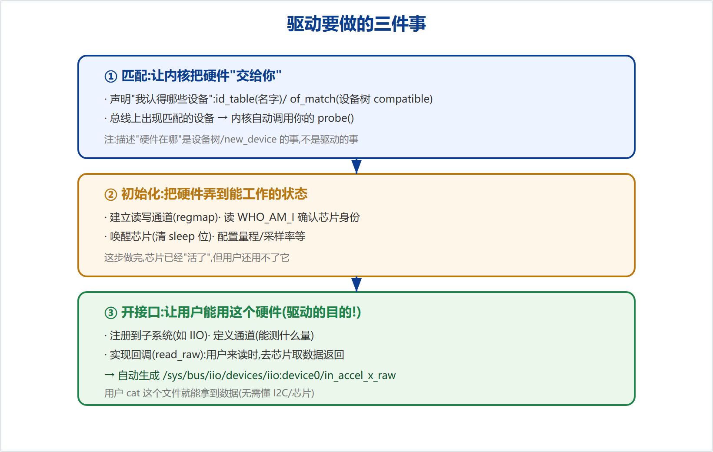
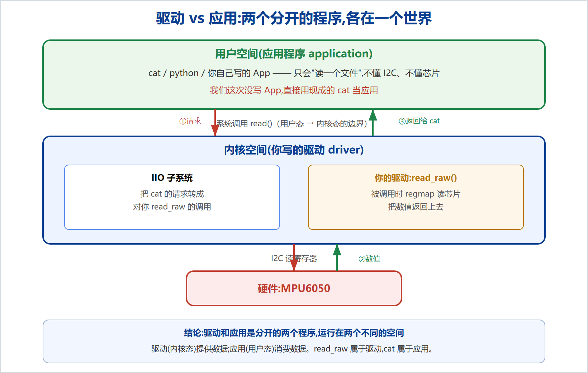

很多初学者以为"驱动 = 把硬件信息注册一下,让内核能找到硬件"。这是最大的误区。"描述硬件在哪"是设备树的事;驱动真正的职责,是把一颗躺在总线上、谁也用不了的芯片,变成一个用户能用的服务。
| 角色 | 是什么 | 谁负责 / 在哪 |
|---|---|---|
| 设备 device | 描述"哪里有个什么硬件"(在哪条总线、地址、名字) | 设备树(真板子)/ new_device(模拟);不是驱动 |
| 驱动 driver | 操作这个硬件,并开一个接口让用户能用它 | 你写的代码,运行在内核态 |
| 应用 application | 使用这个硬件(读数据、做业务) | 用户程序(cat / python / App),运行在用户态 |
"让内核找到硬件"只是设备 + 匹配机制干的事,它只是让驱动的 probe 被调用——这是开始,不是结束。
把一颗芯片变成可用的服务,驱动要依次做三件事(图 1)。

声明"我认得哪些设备"(id_table 按名字 / of_match_table 按设备树 compatible)。总线上出现匹配的设备 → 内核自动调用你的 probe()。注意:描述"硬件在哪"是设备树/new_device 干的,不是驱动。
建立读写通道(regmap)、读 WHO_AM_I 确认芯片身份、唤醒芯片(清 sleep 位)、配置量程/采样率等。这步做完,芯片"活了",但用户还用不了它。
注册到子系统(如 IIO)、定义通道(能测什么量)、实现回调 read_raw(用户来读时去芯片取数据返回)。注册后会自动生成 /sys/bus/iio/devices/iio:device0/in_accel_x_raw 等文件,用户 cat 就能拿数据。
驱动和应用是两个分开的程序,运行在两个不同的世界(图 2):

mpu6050_iio.c。它只负责"把数据准备好,放到 sysfs 文件里"。read_raw() 是驱动这一侧的回调(响应"有人来读了")。cat 就是应用——Linux 自带的通用工具。我们没写应用,直接借 cat 来读。在经典字符设备里,你通常会写两个文件:
led.c —— 驱动(里面有 file_operations 的 open/read/write)。ledApp.c —— 应用(open /dev/led,write 开关灯)。它们本来就是分开的两个程序。我们这次的 read_raw 相当于 led.c 里的 .read(都是驱动侧);区别只是——我们没写配套 App,直接用 cat 顶替了那个应用。
用户敲:cat /sys/bus/iio/devices/iio:device0/in_accel_x_raw ↓ 系统调用 read()(用户态 → 内核态) ↓ IIO 子系统:把请求转成对你 read_raw() 的调用 ↓ 你的驱动 read_raw():regmap 读芯片的加速度寄存器 ↓ 返回数值 用户屏幕上看到:4660
| 代码 | 对应哪件事 |
|---|---|
id_table / of_match_table | ① 匹配:让内核把硬件交给你,触发 probe |
devm_regmap_init_i2c(建通道) | ② 初始化:建立读写芯片的通道 |
读 WHO_AM_I(0x75) | ② 初始化:确认芯片身份 |
清 PWR_MGMT_1 的 sleep 位 | ② 初始化:唤醒芯片 |
iio_chan_spec 通道数组 | ③ 开接口:声明能测什么量(生成 in_accel_x_raw) |
read_raw() 回调 | ③ 开接口:用户来读时去芯片取数据返回 |
devm_iio_device_register | ③ 开接口:把这个"柜台"挂到 /sys/bus/iio/ 下 |
本文为 MPU-6050 IIO 驱动学习的概念梳理。配套代码:github.com/fyy0619-cell/xiangmu